地政学
ポルトノボは公的首都で、コトヌーの港湾経済と分担しながら国家の象徴を担う。ナイジェリア国境にも近く、ラグーン、道路、交易、人の往来が西アフリカ沿岸の政治を映す。静かだが国家の記憶を預かる首都だ今も。
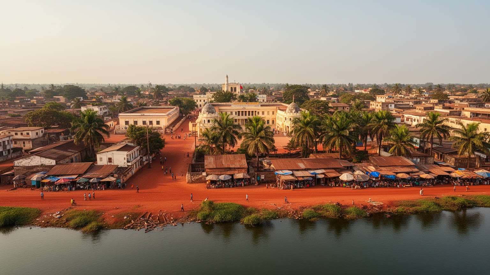
🇧🇯 ベナン / ウェメ県 / World City Atlas
ノクエ湖とラグーンの内陸側にあるベナンの公的首都。王国史、国会、行政、ヨルバとフォンの文化、ヴォドゥン、植民地期の建築、市場、工芸、コトヌーとの役割分担が重なる都市です。
都市の骨格
ポルトノボはベナンの公的首都でありながら、経済と多くの政府実務を担うコトヌーの陰に隠れがちです。だからこそ、王宮、国会、市場、宗教、住宅地が近接する静かな政治都市として読めます。
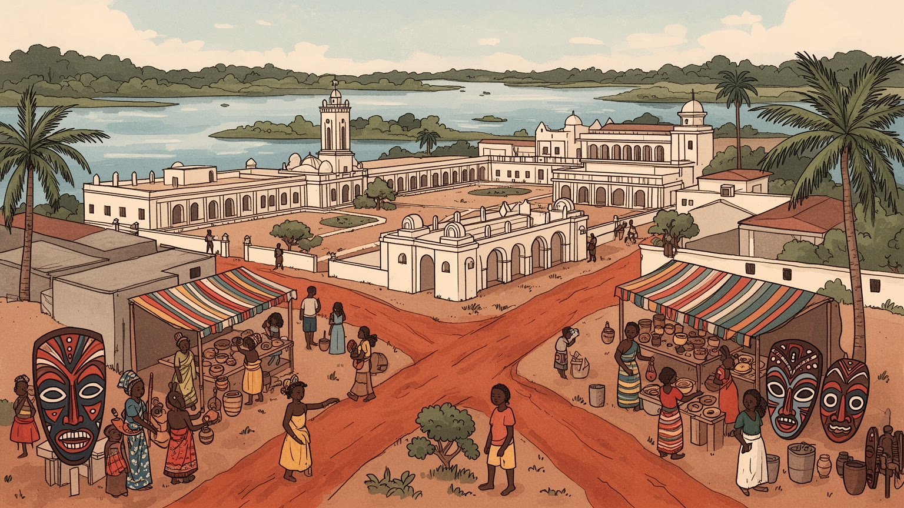
ポルトノボは公的首都で、コトヌーの港湾経済と分担しながら国家の象徴を担う。ナイジェリア国境にも近く、ラグーン、道路、交易、人の往来が西アフリカ沿岸の政治を映す。静かだが国家の記憶を預かる首都だ今も。
雇用は行政、学校、市場、小売、農産物流通、工芸、交通、近隣都市への通勤に支えられる。大港湾や金融の中心ではないが、職人、商人、公務員、学生が日々の都市経済を作る。小さな仕事が街を動かしている毎日だ。
ヨルバ、グン、フォンの言語と歴史、王宮、ヴォドゥン、イスラム、キリスト教が重なる。祭礼、家族儀礼、祖先への敬意、仮面、太鼓、教会とモスクの時間が、首都の公共性を日常から形づくる場所である街だ今も。
旅行者は王宮、博物館、植民地建築、湖畔、近郊の水上集落へ向かうが、住民は学校、住宅、道路、排水、仕事、物価と向き合う。観光の穏やかな街並みは、暮らしの課題と同じ赤土の道に立つ街でもある場所だ今も。
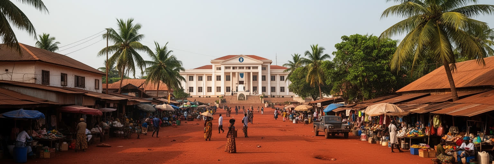
ポルトノボはベナンの公的首都でありながら、経済の重心と多くの行政実務は西のコトヌーに集まる。この二重構造は、都市の弱さではなく、ベナンという国家の成り立ちを読む入口になる。港、空港、企業、外交機能がコトヌーに寄る一方、ポルトノボには国会、王国の記憶、古い行政、学校、博物館、宗教施設、市場が残り、首都という言葉を象徴と歴史の側から支える。街の規模は大きくないが、国会へ向かう道、旧植民地期の建物、王宮周辺、赤土の住宅地は、国家が一つの都市だけで完結しないことを示す。公的首都であることは、日常の派手さよりも、儀礼、法、記憶、代表性を保つ役割である。コトヌーとの近さは通勤や商売を助ける一方、投資や若者の職を奪われる感覚も生む。ポルトノボを読むには、中心と周縁を単純に分けず、港湾都市と政治都市が互いに補い、競い、依存する関係を見る必要がある。静かな首都の価値は、高層ビルの量ではなく、国の制度と歴史を落ち着いて見せる力にある。国の式典や議会のニュースが街の名を外へ運ぶ一方、住民の関心は道路、学校、排水、雇用に向く。その距離が首都の現実であり、象徴を生活へどう結び直すかが都市運営の課題になる。首都性は肩書きではなく、日々更新される公共の約束でもある。静かな議場の周辺で暮らす人々の声もまた、首都の正統性を支える。
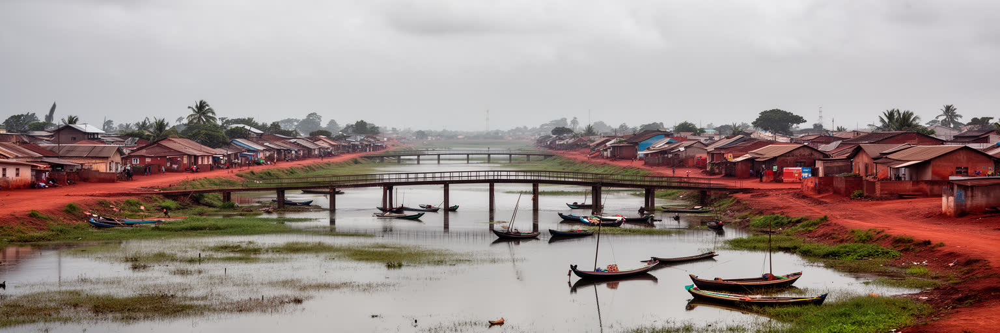
ポルトノボはギニア湾の海岸線から少し内陸に入り、ノクエ湖やラグーン、湿地、運河に近い低地の都市として発達した。海に直接面する港湾都市ではないが、水辺は交易、漁、移動、農産物の流通、洪水リスクを通じて街を形づくる。雨季には排水の弱い道路や低い住宅地が影響を受け、乾季には砂塵と暑さが生活を変える。周辺には水上集落や湿地の景観があり、ポルトノボは内陸の政治都市であると同時に、沿岸ラグーン世界の一部でもある。地形の細かな高低差は、家を建てる場所、道路を通す場所、市場へ物を運ぶ時間を左右する。水は観光資源であるだけでなく、蚊、衛生、廃棄物、漁業、交通の条件でもある。都市開発が進めば、湿地の埋め立て、排水路の詰まり、低所得世帯の立地が問題になる。ポルトノボの穏やかな街路を歩く時、見えにくい水の流れを考えることが重要だ。ラグーンの近さは、海岸の大都市とは違う緩やかな時間を作るが、気候変動と豪雨の時代には、都市計画の核心にもなる。橋や道路の小さな損傷は市場価格や通学にも響き、湿地を失えば雨水の逃げ場も狭まる。水辺を守ることは景観保護だけでなく、住民の健康、交通、食料、住宅の安全を守る政策である。水上交通や近郊漁業も、街と周辺村落を結ぶ記憶を保っている。都市の縁に残る水辺をどう使い、どう残すかは、観光と防災の双方に関わる判断になる。
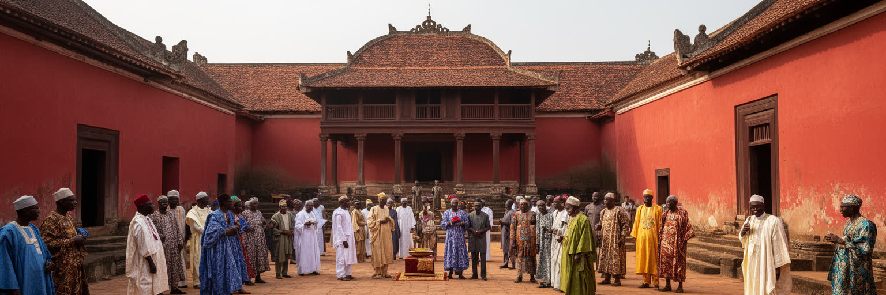
ポルトノボは植民地期に突然生まれた行政都市ではなく、ホグボヌ、アジャシェとも呼ばれた王国の記憶を持つ。王宮、王家の儀礼、祖先への敬意、地域の首長制は、現代の国会や市役所とは異なる権威の層を街に残している。ベナン南部の歴史は、ダホメ王国、ヨルバ系の都市、交易路、奴隷貿易、欧州勢力、宗教の移動が複雑に重なり、ポルトノボはその交差点の一つだった。王宮は観光名所であるだけでなく、土地、儀礼、家族、記憶を調整する社会的な場所である。近代国家の制度は選挙、法律、行政区分で動くが、人々の帰属や敬意は王家や祖先の物語にも支えられる。歴史を読む時、王国を異国情緒として消費するのではなく、現在の市民生活に残る関係性として見る必要がある。祭礼の太鼓、衣装、仮面、挨拶、家族名は、過去を飾る道具ではない。ポルトノボの政治性は、国会の議場だけでなく、王宮の庭、家族の集まり、地域の儀礼にも現れる。街は複数の権威を抱えながら、首都としての現在を組み立てている。王国の記憶は若者にとって遠い昔話ではなく、結婚、葬礼、土地、名前、祭りを通じて今の生活に触れる。観光がその記憶を扱う時も、説明の主導権が地域に残ることが大切である。王宮を守ることは建物を保存するだけでなく、儀礼を担う人、歌や語りを覚える人、訪問者へ意味を伝える人を支えることでもある。
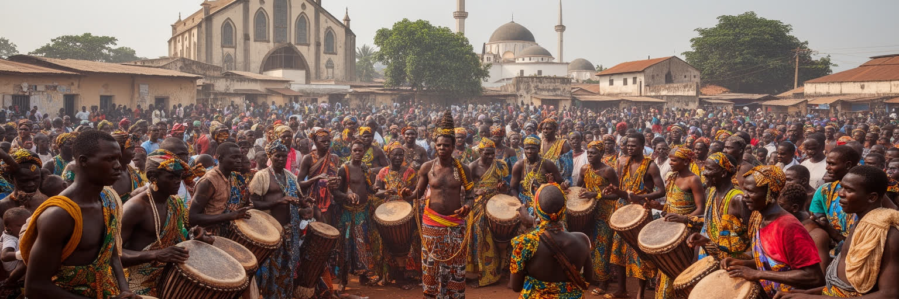
ポルトノボの信仰風景は一枚の地図に収まらない。ヴォドゥンの聖地や祭礼、祖先への敬意、キリスト教の教会、イスラムのモスク、家族の祈りが、近い距離で共存している。ヴォドゥンは外部から誤解されがちな言葉だが、ここでは世界を理解し、病、和解、豊穣、保護、家族の連続を考える宗教文化である。太鼓、踊り、供物、色、神々の名前は、観光の見世物だけでなく、共同体の秩序と記憶を支える。教会とモスクもまた教育、福祉、若者の活動、葬礼、政治的な議論に関わり、宗教施設は公共空間として機能する。多宗教の街では、祭礼の音、礼拝の時間、近隣の協力、家族内の信仰差が日常の調整を必要とする。ポルトノボを理解するには、宗教を伝統と近代の対立として見るのではなく、都市生活を支える実務として読むことが大切だ。病気の相談、家族の決定、商売の縁起、葬儀費用、若者のしつけまで、信仰は生活の細部に入り込む。首都の公共性は、法律だけでなく、こうした見えにくい信頼の回路によっても保たれている。宗教間の共存は自然に放置されているのではなく、近隣の礼儀、家族の交渉、指導者同士の配慮によって保たれる。祭礼を訪ねる人にも、その場の静けさと緊張を尊重する態度が求められる。都市化が進んでも、祈りの場は相談、教育、福祉の入口であり続ける。信仰を理解することは、街の社会的な安全網を理解することでもある。
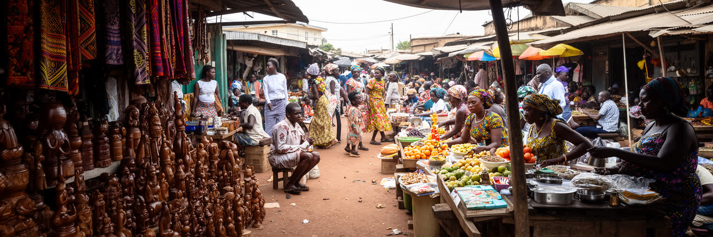
ポルトノボの経済は、国のGDPを押し上げる巨大な金融街や港湾だけでは語れない。市場、小売、農産物流通、布、木工、金属加工、修理、食堂、学校周辺のサービス、近郊農村との取引が、生活の現金を細かく生み出している。女性商人は野菜、穀物、魚、調味料、布を扱い、職人は家具、彫刻、仮面、生活道具を作り、若者はバイクタクシーや小さな商売で収入を得る。コトヌーの港や大市場とのつながりは強く、輸入品の価格、燃料費、道路事情はポルトノボの家計にすぐ反映される。公式な統計に現れにくい仕事ほど、都市の持続を支えている。工芸は観光の土産物であると同時に、宗教儀礼や家の装飾、日用品に関わる技術であり、職人の技能は家族や徒弟関係で継がれる。だが安い輸入品、材料費、若者の職業選択、観光需要の変動は、手仕事の継続を難しくする。市場を歩くことは、都市の社会保障を見ることでもある。少額の売買、信用、親族の手伝い、客との会話が、銀行や企業とは別の経済を作る。ポルトノボの労働は大規模ではないが、都市の厚みはこの細かな仕事に宿っている。市場の屋根、衛生、保管、交通整理が改善されれば、売り手の負担は大きく下がる。職人にとっては作る場所だけでなく、材料を買い、若者へ技を教え、作品を正当に売る回路も必要である。観光と日用品の需要を両方持てる工芸ほど、変動に耐えやすい。
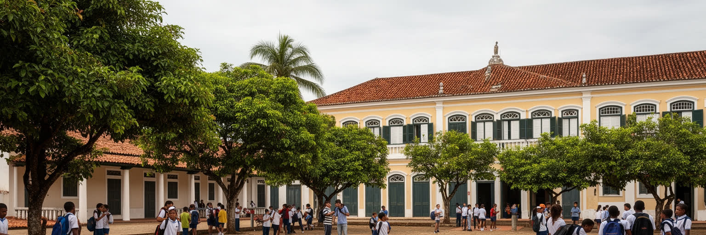
ポルトノボには、ブラジル帰還民の建築、植民地期の行政建物、博物館、学校、教会、古い街路が残り、都市の歴史を立体的に読ませる。大西洋奴隷貿易、ブラジルとの往来、フランス植民地支配、ダホメからベナンへの国家形成は、石や木の建物、屋根の形、街区の配置、学校制度に痕跡を残した。博物館や旧家を訪ねる時、建築の美しさだけでなく、強制移動、帰還、商業、教育、宗教改宗、行政支配の歴史を同時に考える必要がある。学校はこの都市で特に重要な公共施設で、若者に行政、法律、教育、医療、商業へ進む道を開く。公的首都でありながら経済中心ではないポルトノボでは、教育が都市の未来を作る大きな資本になる。植民地期の建築は保存すれば観光資源になるが、維持費、所有権、老朽化、現在の住民の生活との調整が難しい。歴史的建物を空の記念物にせず、学び、仕事、地域活動に使い続けることができれば、街の記憶は現在の力になる。ポルトノボの遺産は、古いものを眺めるだけでなく、誰がその歴史を語り、誰が保存の負担を負うのかを問う場でもある。校庭、図書館、博物館がつながれば、子どもたちは街全体を教科書として使える。保存は観光客のためだけでなく、住民が自分の都市を説明する言葉を持つための投資でもある。建物の修復と授業の内容が結びつけば、遺産は若い世代の職能にもつながる。
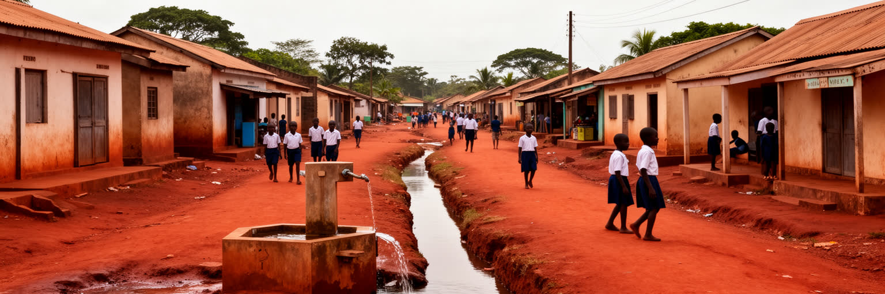
ポルトノボの日常は、王宮や国会の周辺だけでなく、赤土の住宅地、学校へ向かう道、市場の裏通り、排水路、共同の水場、バイクが行き交う交差点に表れる。住宅は家族の成長や親族の滞在に合わせて増改築され、庭や店先は生活と商売の境目になる。雨季には未舗装道路や排水の弱い地区で移動が難しくなり、ごみ、蚊、浸水、衛生が問題になる。電力、水道、通信、学校、診療所、公共交通の質は、中心部と周縁で差が出やすい。首都という名前があっても、すべての住民が首都らしいサービスを受けられるわけではない。若い世帯は仕事を求めてコトヌーへ通うことも多く、交通費と時間が家計を圧迫する。土地や借家の権利が曖昧な場合、家の修繕や商売への投資もしにくい。都市サービスを考える時、行政施設の立派さより、雨の日に子どもが学校へ行けるか、夜に安全に帰れるか、病人を運べるかが重要になる。ポルトノボの住宅地には、近隣の助け合い、家族の店、宗教施設の支援がある一方、公共投資の不足も見える。静かな街の暮らしは、細いインフラの上で成り立っている。街灯、歩道、排水溝、ごみ収集のような地味な設備は、女性や子ども、高齢者の移動を支える安全策でもある。首都の品格は大きな建物より、こうした日常の安心に現れる。住宅地を歩ける都市にすることが、観光の質も住民の暮らしも同時に高める。
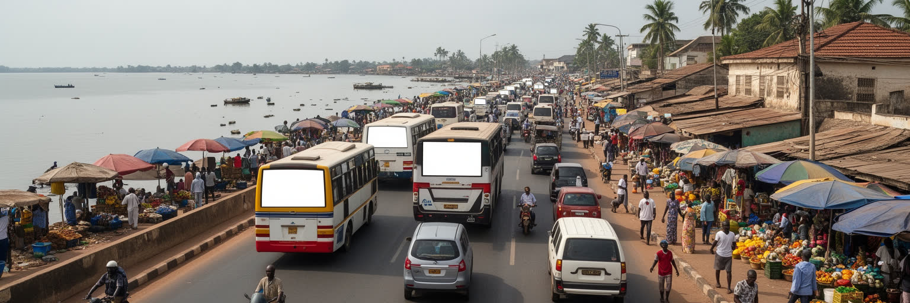
ポルトノボは単独で閉じた都市ではなく、コトヌーとの回廊の中で動いている。両都市の距離は近く、道路を通じて人、商品、公務、学生、患者、商人、観光客が移動する。コトヌーには港、空港、金融、外交、企業、巨大市場が集まり、ポルトノボは公的首都、歴史都市、住宅地、教育の場として補完的な役割を持つ。この近さは便利だが、交通渋滞、燃料費、道路安全、通勤時間、物流費、都市間の投資格差を生む。若者が仕事を求めてコトヌーへ向かう時、ポルトノボは寝る場所や家族の拠点になりやすい。逆に観光客はコトヌーから日帰りでポルトノボへ来ることが多く、滞在時間が短ければ地元の宿泊や夜の経済には利益が残りにくい。都市間の関係をうまく設計できれば、ポルトノボは静かな歴史首都として教育、文化、行政、観光を磨き、コトヌーの過密を和らげる役割も果たせる。だが単なる衛星都市になれば、若い人材と投資は外へ流れる。回廊の道路、公共交通、排水、土地利用、観光案内を一体で整えることが必要だ。ポルトノボの未来は、コトヌーに勝つことではなく、近さを不均衡ではなく相互補完に変えられるかにかかっている。通勤者にとっては運賃と時間が生活費であり、商人にとっては道路の遅れが仕入れの損失になる。二つの都市を結ぶ交通を生活線として扱えるかが、首都圏全体の公平性を左右する。
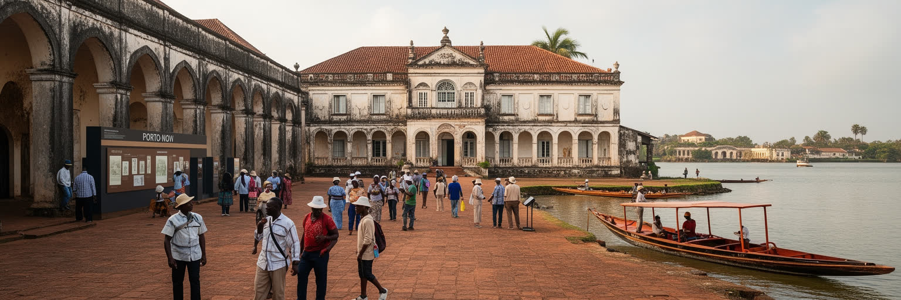
ポルトノボの観光は、派手なリゾートではなく、王宮、民族誌博物館、ブラジル風建築、植民地期の街路、湖畔、宗教儀礼、近郊の水上集落をゆっくり訪ねる旅に向いている。観光客にとっては穏やかな散策でも、その背後には王国、奴隷貿易、帰還民、植民地支配、独立後の国家形成、宗教の誤解と再評価という重い歴史がある。ガイドや博物館、地域の説明が丁寧であれば、旅行者は写真を撮るだけでなく、ベナン南部の複雑な記憶を学べる。観光収入は職人、運転手、宿、食堂、土産物店を支えるが、短時間の日帰り消費だけでは地域に残る利益は限られる。宗教儀礼や王宮を訪れる時には、撮影、服装、言葉、供物、立ち入りの礼儀が必要である。観光を増やすことは目的の一部にすぎず、住民が誇りを持って歴史を語り、若者が仕事を得て、建物が維持され、宗教文化が尊重される仕組みが重要になる。ポルトノボの魅力は静けさにあるため、過剰な演出や雑な商品化は街の質を損なう。穏やかな街歩きこそ、見えにくい歴史を深く聞く姿勢を求める。観光は記憶を軽くするのではなく、重さを分かち合う入口であるべきだ。案内板や展示を整えるだけでなく、地元の語り手、職人、学校、宗教関係者が参加できる仕組みがあれば、観光は外から消費される物語ではなく、住民が自分たちの都市を再確認する機会にもなる。
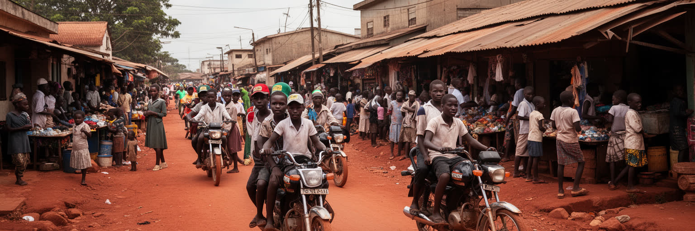
ポルトノボの若者は、学校、職業訓練、家族の商売、バイク交通、小売、工芸、行政職、コトヌーへの通勤、国外への移動の間で将来を探している。首都であることは教育機会を増やすが、地元に十分な雇用がなければ、学んだ若者ほど外へ出る。非公式な仕事は柔軟だが、収入が不安定で、事故、病気、景気の変動に弱い。女性の若者は学業、家事、商売、結婚、移動の安全を同時に考えなければならず、社会的な期待も重い。都市の課題は失業だけではない。物価、家賃、交通費、学校費、医療費、インターネット環境、公共空間の不足が、若い世代の選択を狭める。宗教団体、学校、家族、職人の徒弟制は支えになるが、現代的な技能や起業支援、信用へのアクセスも欠かせない。若者が歴史都市を古い場所としてではなく、自分たちが働き、表現し、改良できる場所として見られるかが重要である。音楽、ファッション、デジタルメディア、工芸、観光案内、環境活動は、新しい仕事の入口になり得る。ポルトノボが静かな首都であり続けるためにも、若者の居場所と収入を作ることは都市政策の中心である。若い世代が市政や文化事業に参加できれば、歴史保存も雇用対策も別々の課題ではなくなる。街を出る選択を否定せず、戻って働ける回路を作ることが持続性を高める。安全な学習場所と小さな起業の場が増えれば、首都の静けさは停滞ではなく挑戦の余地になる。
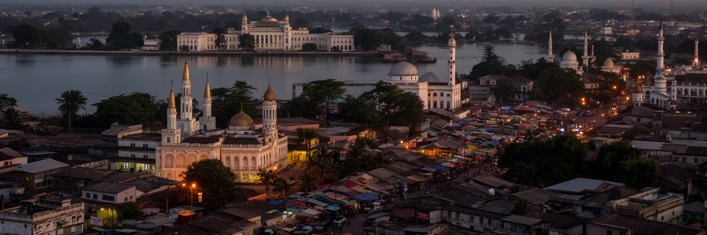
ポルトノボは、首都という言葉から想像される巨大な官庁街や大使館街とは違う姿をしている。経済と多くの実務はコトヌーに寄り、街の規模も世界都市の基準では控えめである。それでも、この都市には王国史、国会、ラグーン、ヴォドゥン、ヨルバとフォンの文化、植民地期の建築、ブラジル帰還民の記憶、市場、工芸、教育、住宅地の課題が濃く集まる。ポルトノボを読むことは、都市の重要性をGDPや人口だけで測らない練習でもある。静かな街路の背後には、奴隷貿易、帰還、植民地支配、独立、宗教の継承、港湾都市との役割分担が重なる。観光客が王宮や博物館を訪ねる時、住民は同じ道で通学し、商売をし、礼拝へ向かい、排水や交通の不便に対処している。首都の価値は、外から見える華やかさではなく、国家の記憶と日常生活を同時に抱える力にある。ポルトノボはコトヌーの影ではなく、ベナン南部の歴史と公共性を別の速度で見せる都市である。水辺、赤土、王宮、市場、信仰の時間を重ねると、この静けさが豊かな都市性として立ち上がる。ここでは大きな開発計画より、歴史を傷めずに道路を直し、若者の仕事を作り、湿地を守り、住民が誇りを持てる公共空間を育てることが重要になる。静かな首都を読む目は、都市の力を別の尺度で測る目でもある。ベナンの全体像は、港の喧騒だけでなく、この落ち着いた政治と記憶の街からも見えてくる。